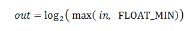

Log 运算符应用对数或反对数函数，在线性和 Cineon 样式编码之间转化。
它是 Academy/ASC XML 颜色变换格式的 Autodesk 扩展。
引入
版本 1.3。
包含
- Description。可选，任意数量。
- LogParams。如果 style 属性为 "logToLin" 或 "linToLog"，则必需。如果值应用于所有 RGB 通道，应出现 1 次，或者如果不同的值分别应用于 R、G 和 B，则应出现 3 次。
- DynamicParameter。可选，至多一个。param 属性必须设置为 "DEFAULT_LOOK"。
包含于
属性
- id、name、bypass、inBitDepth、outBitDepth
- 请参见通用运算符属性。
- style
- 指定用于转化的公式。必需。
注： 以下方程式假定输入和输出位深度是浮点。对于整数，值已归一化为 [0.0, 1.0]。换句话说，存储在 CTF 文件中的 Gamma、基准白色、基准黑色、高光和阴影值不取决于输入和输出位深度。在以下方程式中：
值 含义 "log10" "log2"  "antiLog10" "antiLog2" "logToLin" "linToLog" 
示例
所有通道
<ProcessList id="19510ea6-69a0-4d3d-bc75-d0b36d458f62" name="Log op 1" version="1.3">
<Log inBitDepth="16f" outBitDepth="12i" style="linToLog">
<LogParams gamma="0.6" refWhite="685" refBlack="95" highlight="1.0" shadow="0.0005"/>
</Log>
</ProcessList>
单独通道
<ProcessList id="19510ea6-69a0-4d3d-bc75-d0b36d458f62" name="Log op 1" version="1.3">
<Log inBitDepth="16f" outBitDepth="12i" style="linToLog">
<LogParams channel="R" gamma="0.5" refWhite="685" refBlack="95" highlight="1.0" shadow="0.0005"/>
<LogParams channel="G" gamma="0.6" refWhite="685" refBlack="95" highlight="1.0" shadow="0.0005"/>
<LogParams channel="B" gamma="0.65" refWhite="685" refBlack="95" highlight="1.0" shadow="0.0005"/>
</Log>
</ProcessList>